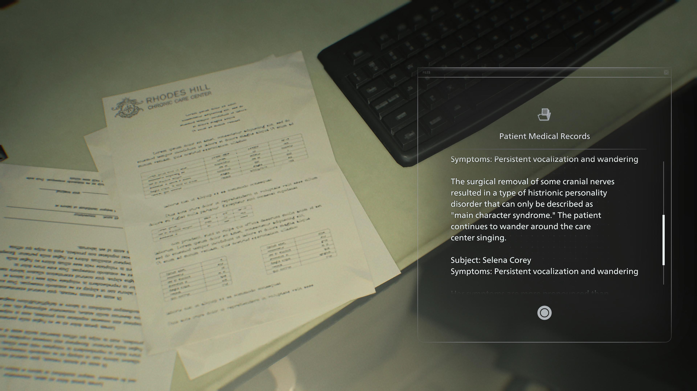
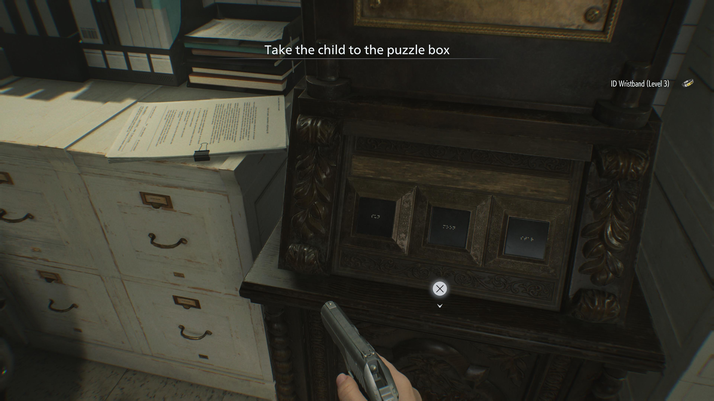
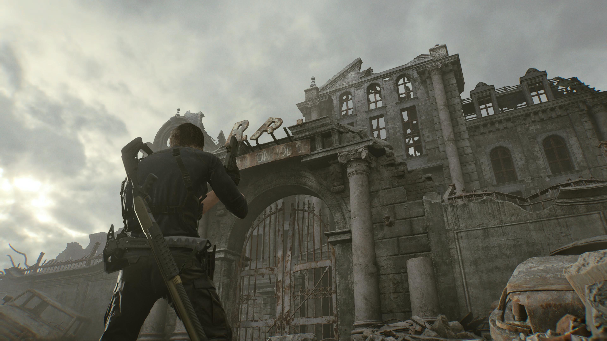
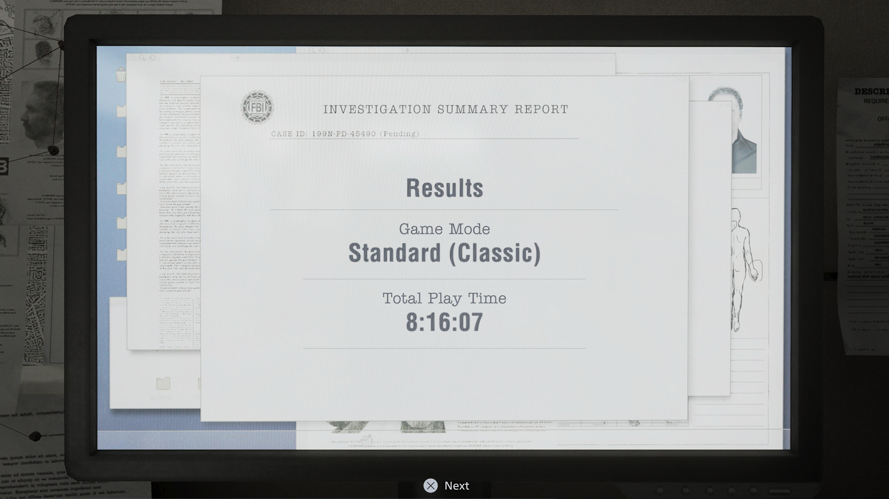
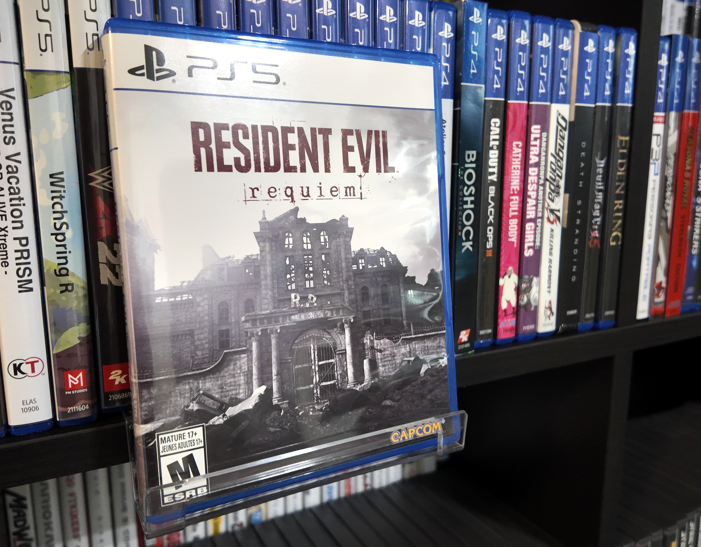

1game1week - Week 10 (4/1/26) - Resident Evil requiem
April Fools'! The joke is I'm posting again! ...So I kinda let the entire month of March kind of slip me by. I'm not gonna pretend I've been too busy to sit down and yap online about stupid videogames, but... Yeah, no, I think I've just been too busy to sit down and yap online about stupid videogames. A good chunk happened this past month, so I've been a tiny bit checked out. I did feel a little bit guilty for letting this slip by, but it's not like anyone's really chomping at the bit refreshing their browsers waiting for me to post so it's probably okay. I'm gonna try to catch up on posts by the end of this week. How realistic that is, is yet to be seen, but I'll try anyways. I typically use these posts as a "time capsule" for myself to also read what I was up to, so throughout these next few posts I'll also be trying to remember exactly what happened during the time I was supposed to be posting them. Not a lot actually happened during 3/8 -> 3/12, so I'll just skip that and talk about "today" instead. First off, I wanted to just quickly say congratulations to my friend Billy for releasing his translation patch for Tomitake Princess. I know it's just an April Fools' gag, but he put in a massive effort and I wanted to at least commend him for it. I did some proofreading for it, so I kind of went through the whole thing. I will however not make a 1g1w post about it or consider it part of my backlog. I kinda wanna forget it actually. You can find the VNDB entry here. Also, I'll edit this post whenever he makes his own post. Anyways!New games from 3/5 -> 3/11: - None! (Total 7)
As of 3/12, my yearly backlog was at -14 (lower is better, -+0 since last week). And onto 1g1w. A game is considered "beaten" if I've accomplished the main objective of the game, regardless of how many routes / endings I've achieved. However, it's preferable to get all endings if possible! GAME(S): Resident Evil requiem (PS5) PLATFORM: PS5 GENRE: Action / Survival Horror STARTED ON: 3/2 BEATEN ON: 3/3 TOTAL PLAYTIME: 25h33m (Tracked via PS-Timetracker) And rounding out the 7/8/9 trilogy is Resident Evil requiem! I've been really looking forward to this game and had a blast playing it. It wasn't the best game of all time, but it was incredibly enjoyable. It takes elements from both Resident Evil 7 and 8, as well as the 2/3/4 remakes. I think they've done a phenomenal job of providing an experience that's enjoyable for fans of either experience (or both!). For the most part, Grace's sections are the survival horror aspect, taking cues from 7 and 8, and Leon's are more action-oriented, playing a lot more similarly to the remake games. The game recommends that you play Grace's sections in first person, and Leon's in third person (over the shoulder), though you can select whichever way you want. Something that I thoroughly enjoy in Resident Evil games is trying to go fast and watching speedruns, so I actually watched quite a few of them after my first playthrough. It's really cool seeing the game cleared in less than two hours, and as a viewer, you occasionally pick up some really funny tech. In one of Leon's sections, there's a really funny glitch involving selecting first person perspective. As a rule of thumb, first person has faster movement speed, so it's typically the go-to. However, *looking up* seems to break the enemy's AI in a particular segment. You can see it here: https://www.youtube.com/watch?v=Qpn-ES1xkJ8. Around 1:03:30, he gets on an elevator going down and just... looks up. Enemies drop down. They just kinda hang out there. They don't try to hit him. It's only the blister head that has actual AI that tries hurting him if it spawns or drops down. With this current strat, that doesn't even seem to happen, so it's just a two-minute break. It's funny, and one of the quirks of this game. I think looking at speedrunning and tricks used there give a fun 'other' side to the game not normally seen in a normal playthrough. There's always really cool things to find out about games when playing them this way. Pretty much followed a speedrun while trying to do the Speed Demon trophy, which requires you to beat the game in under 4 hours. Decently simple! We start out being introduced to Grace, an FBI Intelligence Analyst, investigating the site of a series of murders. It turned out (not spoiler since it's part of the opening scene) that her mother, Alyssa Ashcroft of Resident Evil Outbreak fame, had been murdered in the hotel a few years before the game's events. From there, stuff happens and she ends up in the Rhodes Hill Care Center, which acts as a maze-like area full of puzzles. The area itself is quite fun. It's laid out between two floors, with West/East wings. An incredibly, incredibly cool part of this section is the fact you have essentially no resources. Up until you get to the second floor of the West wing, you only have a single bullet with Requiem. Even then, the gun in the second floor is actually pretty easily missed. Personally, my first weapon in this section was the handgun in the East wing, which meant I needed to get through a good chunk without a gun. That's not to say there's no other stuff you can do. You can hide and throw glass bottles to draw enemies towards a particular place for you to get by, you can take alternative routes, and you can learn crafting recipes for things such as injectors, which are insta-kill consummables. There's various zombies that actually seem to have a bit of personality. The T-Virus in this game seems to allow people to retain some of their actual traits in real-life. So, you'd see staff talk, clean, you'd see some patients being mad at noise, you'd have two singers that blast your eardrums out...

In the second floor of the east wing, you also meet Chunk, who is just one of those enemies that roams around the entire place and chases you. I think Resident Evil could probably do away with them... there's been too many of these recently, I think. We've had Jack, then Mr. X, Nemesis, then Lady Dimetrescu, so... it just feels a little bit overdone. It's not like the game is worse off by having Chunk (or The Girl in the basement section), it's just annoying to have to spend a few minutes going around him. Actually, there's a really funny speedrun strat for this too. You can essentially bait a zombie to kill Chunk for you. I haven't tried it myself, but it's really funny nonetheless. https://www.youtube.com/watch?v=ukXo4dB40lI In this section, you're pretty much just running away, staying out of sight, and solving puzzles. Which brings me to the thing that I absolutely cannot get out of my mind from this game. There are large puzzle boxes that are unlocked by pressing buttons in a particular order. These buttons, for convenience reasons, have braille characters on there, as well as printed-on symbols representing the sun, the moon, and a star above the buttons. For the first two of these boxes, you only need to figure out the code and enter it. However. For the third one, the symbols are missing. Conveniently, the braille is still there. So, instead of having our FBI AGENT INTELLIGENCE ANALYST try to very simply decode the braille- which, again, is just "MOON", "SUN", and "STAR", three very easily decodable things even if you can't read braille, our brave protagonist decides to recruit a blind girl to figure it out for her, dragging her through a maze of flesh-eating zombies. I just can't get over it. It completely took me out how much of a total moron they made Grace. This wasn't her only moment that made me think "are you stupid?", just the one that stuck with me the most. Surely the FBI could use my talents of basic braille deduction-based decoding.
Leon sections made me feel like Superman. Sometimes I didn't buy the story that he was sick. Well, maybe he was sick, but he was sick. Well. You get what I mean. The problem with Leon's sections are that they just feel a little tasteless. I just talked about how the zombies in Grace's sections all had their own personalities and quirks, almost... but with Leon, everything is just cannon fodder. I guess it makes sense for an action section, but it's less impactful that way. Also, bosses, specifically with Leon, just feel a little... eh. There's one and half exceptions to this, with a boss specifically in the last section of the game making me pick up my jaw off the floor with how insanely cool it was. I'm also not really hating on this per se, but it did seem like it tried to rely just a touch too much on callbacks and nostalgia. I don't necessarily think it was a bad thing, or poorly handled, but it seemed to be a pretty common complaint online. I think it's probably justified to have nostalgia here, mostly due to it being thematically the "closing chapter" for Raccoon City entirely. The "requiem" if you will.
All in all. I think Resident Evil requiem was fun. Grace's sections were stellar, even if I think she's a bit dumb. Leon's sections were fun, but a little less engaging, with less memorable enemies and a little bit too heavy handed on nostalgia / fanservice. However, the controls themselves were great, and exploring both Raccoon City and the RPD was really, really cool. I thoroughly enjoyed requiem, and I'm really looking forward to the story DLC coming potentially later this year.

Thanks for reading! If you need to contact me for any reason, please feel free to email me at aru@hoshikawa-aru.com.